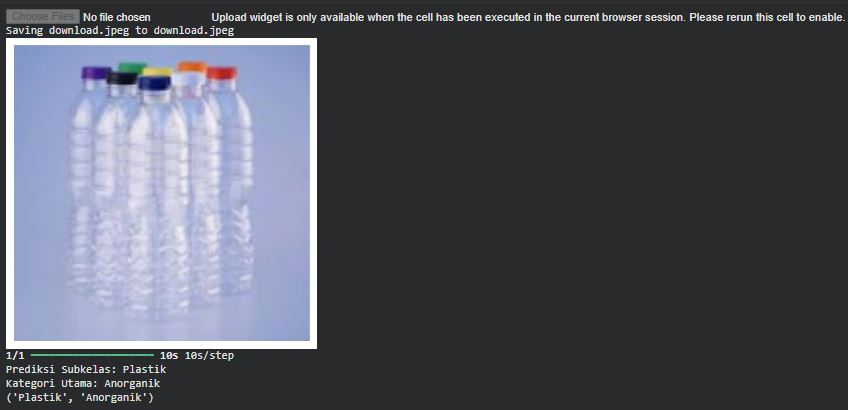

Projects

🍽️ Restaurant Management Website for Client “Ibu Tami”
System Analyst who designs system flows, analyzes requirements, and creates technical documentation for Restaurant websites.
View Details
🧴 Smart Skincare Application
A CNN-based Machine Learning application that classifies facial skin problems and recommends skincare products using content-based filtering.
View Details
🌱 WasteWise AI
A CNN-based model that classifies organic, inorganic, and hazardous waste, developed as part of a collaborative web project.
View Details